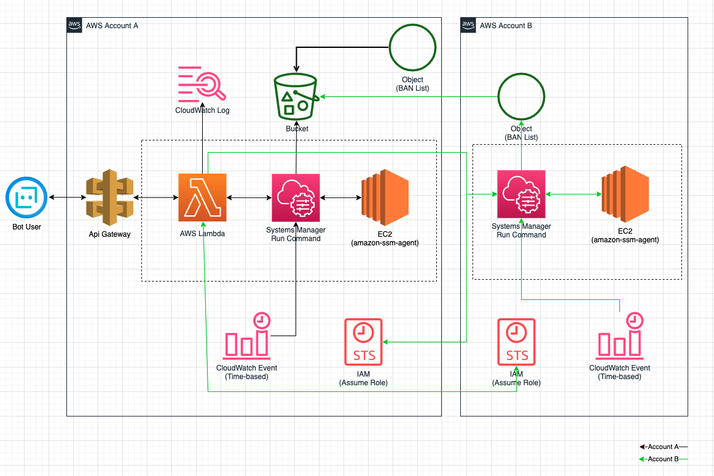

ようやく気が向いてて、何か書こうかと思っていたら、やっぱAWSネタになっちょうね。
今回は二つのAWSアカウントの間で、双方向assume roleでAWSリソースを操作する方法を試してみました。
良かったら、しばしお付き合いくださいましー
背景
以前も、こちらのブログで書いたことがあるchatworkとlambdaでセルフサービスしようぜですが、
iptablesによるsshguardの解除セルフサービスは、また新しいニーズが出てきて、それを対応するための実装は、今回のお話です。
新ニーズ
- 既存を維持しつつ、別のec2インスタンスもbot経由で、解除できるようにしたい
- 解除対象となる2台のec2インスタンスは、別々のAWSアカウントに存在する
- コストとセキュリティをある程度、両立したい
構成
おやおや、困ったものだね〜と呟きつつ、前回の設計を見直し、ズバリこれだ！

基本は、前回の設計を踏襲したモノとなりますが、
その上、クロスアカウント対応のため、lambdaからassume roleをリクエストし、その権限をもって、別AWSアカウントのリソースを操作する。
※双方向assume roleが必要
次に詳しく、各登場キャラクターの役割を説明しようと思います。
各キャラクターの役割
Account A
bot user
専用のbotユーザにTOをつけて話しかけると、webhookが叩かれ、apigatewayに送信
※ここではchatwork userとなります
IPアドレスのみの場合、IP一覧チェックを行い、解除&更新もする
BAN部屋のメッセージを引用された場合、IP一覧チェックを行い、解除&更新もする
それ以外の場合、デフォルトhelpメッセージを返す
API gateway
chatwork webhookから受信し、lambdaでtoken検証をする
問題ないの場合、bodyの解析を行う
- IPアドレスのみの場合、IP一覧チェックを行い、解除&更新もする
- ない場合は、その旨をchatworkに返す
- BAN部屋のメッセージを引用された場合、IP一覧チェックを行い、解除&更新もする
- ない場合は、その旨をchatworkに返す
- それ以外の場合、デフォルトhelpメッセージを返す
lambda function
systemmanagerとs3のSDKを使って、shell実行やipチェックを行う
- s3の指定場所に、現在BANされているIPアドレスの一覧リスト(対象サーバー分のファイルが存在、ファイル名はサーバー名となっている)をダウンロード
- bot userから指定されたIPが、リストに載ってるかをチェック
- 載ってる場合、BANリストのパスとBANされたiptables ruleと組み合わせたdictをlambdaに返し、その解除&更新もする
- 載ってない場合、Noneをlambdaに返し、該当IPが存在しない旨をchatworkに返す
※api gatewayは最大3秒のtimeoutが設定されており（変更不可）、都度各サーバーでiptablesをチェックするより、
s3上にBAN listをアップロードし、それらをチェックした方がレスポンスが早いので、こちらのいうな実装になっております。
前回の実装をいつくか変更していたが、イメージだけこちらで書きます。(そのままでは動けない可能性あり)
1 | from boto3.session import Session |
cloudwatch log
lambda functionの実行logのたまり場です。
debug時には、相当役に立つ
system manager
実際リソース操作するインターフェイスです。
run command経由で、amazon-ssm-agentに命令し、shellコマンドを実行してもらうようにしています
1 | echo %s" % ban_ip |
ec2
amazon-ssm-agentを事前にインストールし、起動させる必要があります。
system managerからの命令を受け、それを実行する。
※インスタンス特定できるように、指定のtagをつける
※bot: release-sshguard
s3 bucket
BAN listファイルの格納場所
サーバーごとのBAN listファイルがここに羅列されています
※ファイル名は、サーバー名となってます
cloudwatch events(今event bridgeという名前になった)
BAN listが随時更新させるように、1分ごとで、system manager経由で最新BAN listファイルをs3にアップロードさせるための機能
EC2インスタンスのBAN listが実際更新されつつではあるが、頻度やコストの兼ね合いで、1分間/回の更新はもう十分と考えていました。
iam(sts)
クロスアカウントのassume roleのため、新しいiam roleを作り、assumeできる権限を付与しています。
※Account Bに利用させるため
1 | # Account Aのlambda実行roleに、Account Bのassume roleを許可 |
1 | # Account Aで新規s3を操作できるroleを作り、Account Bのassumeroleも許可 |
Account B
system manager
Account Aのlambdaによって呼び出され(assume role権限)、対象ec2インスタンスを操作するインターフェイスです
ec2
対象インスタンスにamazon-ssm-agentの事前インストールが必要
cloudwatch events(今はevent bridgeという名前になった)
Account Aと同じく
iam(sts)
Account A時と逆で、Account Aに利用させるためのモノになります
最後
まとめてみたら、意外とめっちゃ長くなったね…
セキュアで別AWSアカウントのリソースを利用するには、assume roleは避けて通れない機能なので、ぜひ使ってみてくださーい！